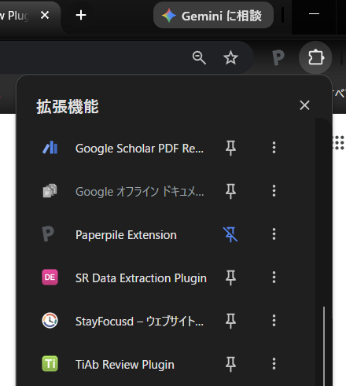
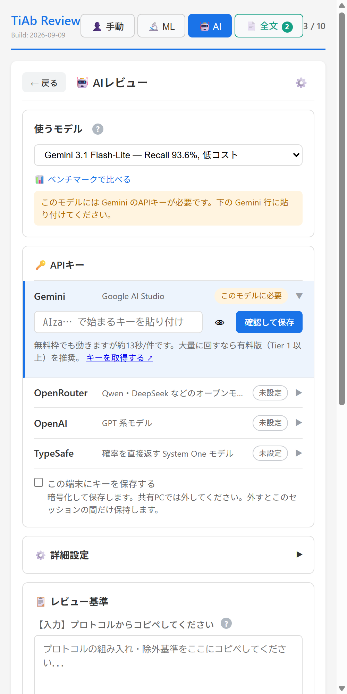
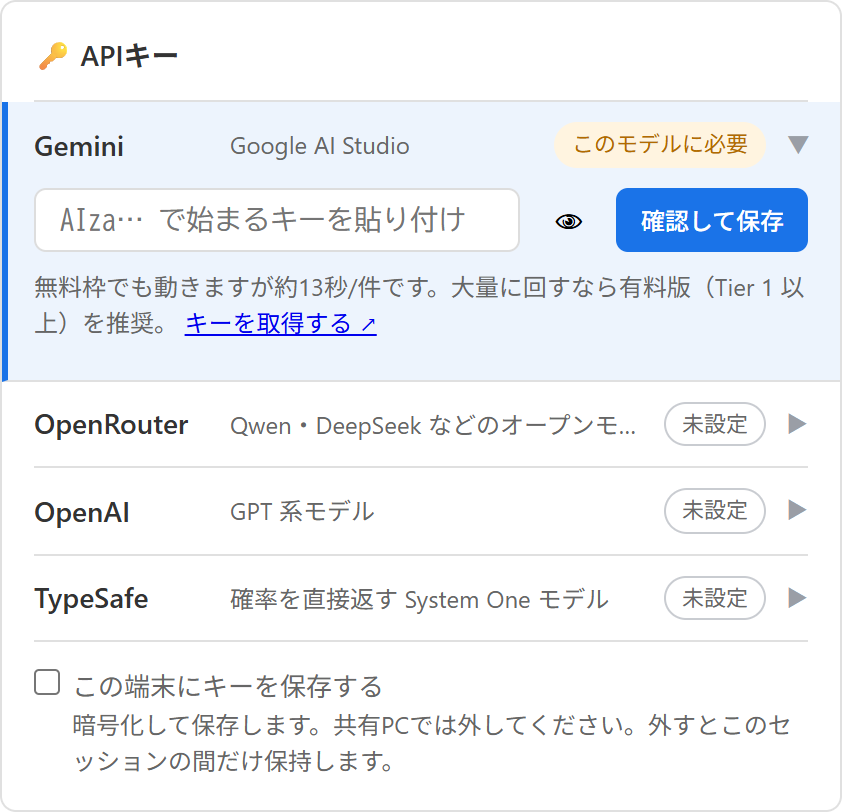
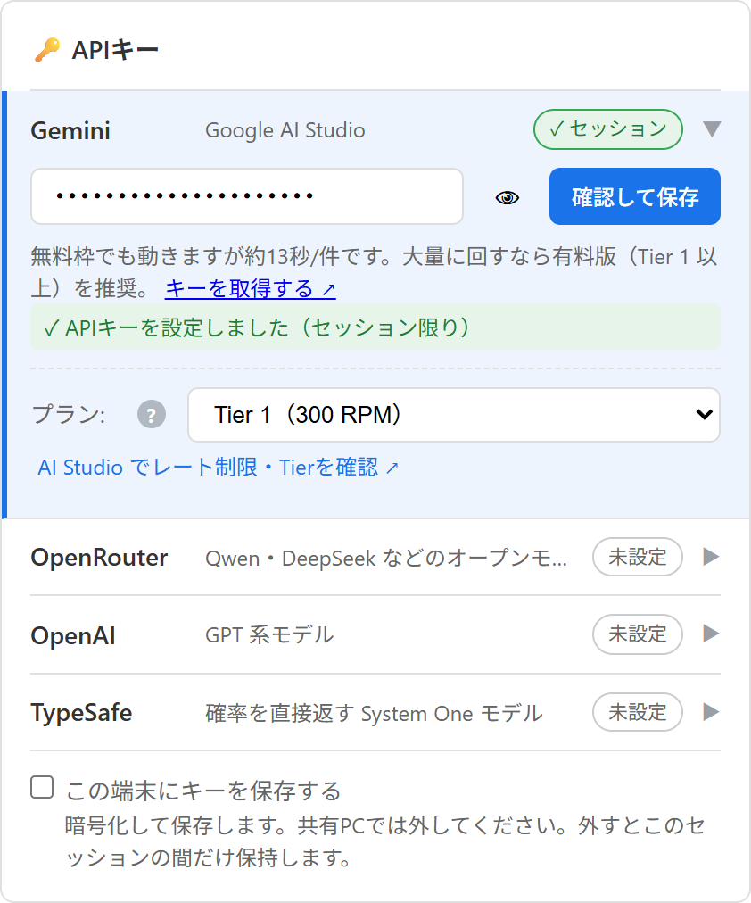
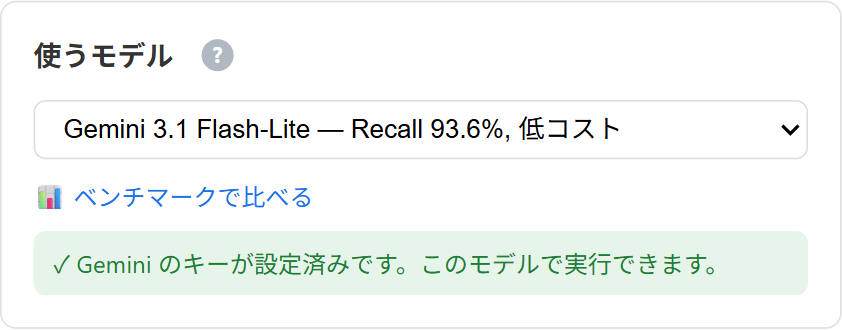
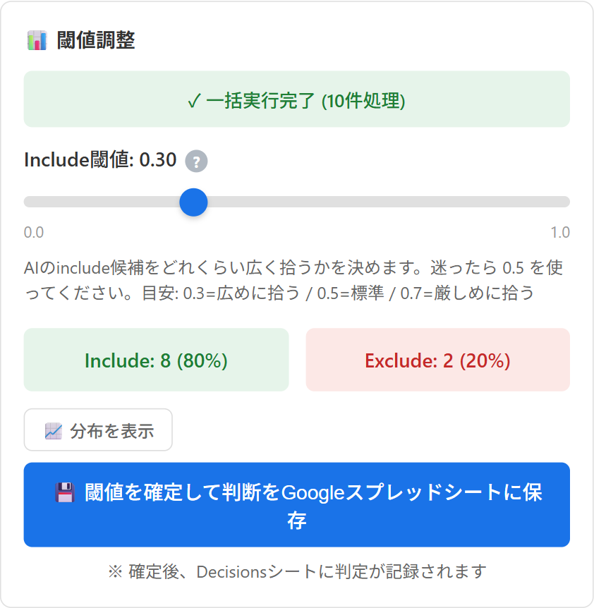
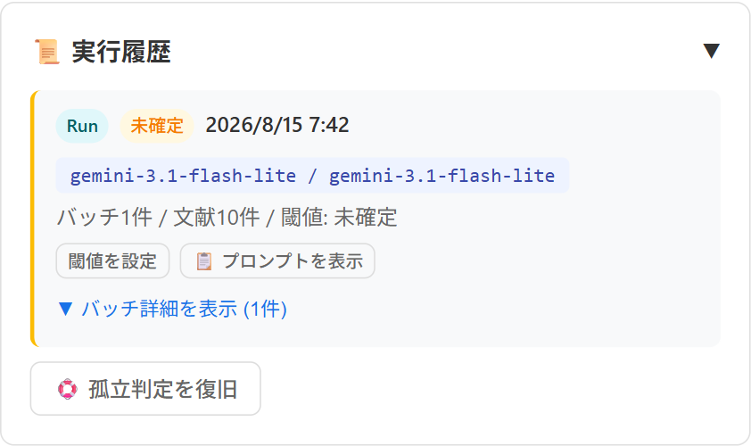
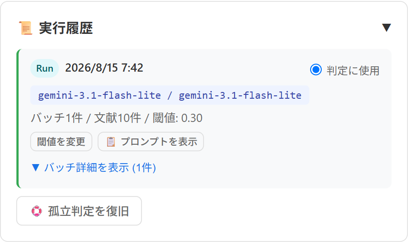

ヘルプガイド Help Guide
最終更新: 2026年8月1日 Last updated: August 1, 2026
🌐 Web版（インストール不要） 🌐 Web App (No Installation Required)
Chrome拡張機能をインストールしなくても、ブラウザだけでTiAb判定に参加できます。スマートフォンやタブレット、Chrome以外のブラウザでも利用できます。 You can join TiAb screening from a browser alone — no Chrome extension install required. It also works on smartphones, tablets, and browsers other than Chrome.
できること・できないことの詳細は Web版（インストール不要） をご覧ください。 See Web App (No Installation Required) for what you can and can't do there.
📺 操作解説動画 📺 Video Tutorial
ログインからTiAbスクリーニング、ML・AI支援、フルテキスト評価、チーム共有までを約10分で解説しています（英語字幕あり）。 A 10-minute walkthrough covering everything from signing in to TiAb screening, ML/AI assistance, full-text screening, and team sharing (English subtitles available).
YouTubeで見る → Watch on YouTube →
インストールと起動 Install and Launch
TiAb Review Plugin は Chrome の拡張機能です。インストールしただけでは画面は開きません。ブラウザのツールバーから起動する必要があります。 TiAb Review Plugin is a Chrome extension. Installing it does not open any window on its own — you launch it from the browser toolbar.
1. 拡張機能をインストールする 1. Install the extension
Google Chrome（または Microsoft Edge などの Chromium 系ブラウザ）で Chrome ウェブストアのページ を開き、「Chrome に追加」をクリックします。 In Google Chrome (or a Chromium-based browser such as Microsoft Edge), open the Chrome Web Store page and click "Add to Chrome".
インストールが終わってもタブや画面は開きません。「インストールできたはずなのに何も起こらない」という状態が正常です。続けて次の手順で起動してください。 No tab or window opens when the installation finishes. "Nothing happened even though it installed" is the expected state — continue with the next step to launch it.
2. 拡張機能アイコンから起動する 2. Launch it from the extensions button
Chrome の右上（アドレスバーの右側）にあるパズルピースの形をしたアイコン🧩をクリックすると、「拡張機能」メニューが開きます。一覧の中の TiAb Review Plugin をクリックすると、画面の右側にサイドパネルが開きます。 Click the puzzle-piece icon 🧩 at the top right of Chrome (to the right of the address bar) to open the "Extensions" menu. Click TiAb Review Plugin in the list, and the side panel opens on the right-hand side of the window.

拡張機能名の右にあるピンのアイコン📌をクリックしておくと、ツールバーにアイコンが常駐し、次回からは1クリックで起動できます。 Click the pin icon 📌 to the right of the extension name to keep it on the toolbar, so you can launch it with a single click next time.
一覧に TiAb Review Plugin が見当たらない場合は、インストールが完了していない可能性があります。手順1のウェブストアのページを開き、ボタンが「Chrome から削除」になっていればインストール済みです。 If TiAb Review Plugin is not in the list, the installation may not have completed. Open the Web Store page from step 1 — if the button reads "Remove from Chrome", it is already installed.
3. ログインしてプロジェクトに接続する 3. Sign in and connect to a project
サイドパネルが開いたら、ログイン画面 の手順に進みます。共同研究者から招待された場合は、受け取ったスプレッドシートの URL を貼り付けて接続してください。 Once the side panel is open, continue with the Login Screen steps. If a collaborator invited you, paste the spreadsheet URL you received and connect.
文献ファイル（.nbib / .ris）の扱い About reference files (.nbib / .ris)
PubMed などからダウンロードした .nbib や .ris
のファイルは、ダブルクリックして開くファイルではありません。開こうとすると「このファイルは開けません」「再生できません」といったメッセージが出ることがありますが、故障ではありません。ダウンロードした状態のまま、拡張機能を起動して TiAbスクリーニング の「インポート」から読み込んでください。
Files such as .nbib and .ris downloaded from PubMed are
not meant to be opened by double-clicking. Your computer may say it cannot open or play the
file, but nothing is broken. Leave the file where it downloaded, launch the extension, and load
it from "Import" in TiAb Screening.
ログイン画面 Login Screen
TiAb Review プラグインを開くと最初に表示される画面です。Googleアカウントでログインし、レビュープロジェクトを選択または作成します。 The first screen displayed when you open the TiAb Review plugin. Sign in with your Google account and select or create a review project.
Googleアカウントでログイン Sign in with Google
「Googleアカウントでログイン」ボタンをクリックして認証します。初回ログイン時は、Google APIへのアクセス許可を求められます。同じGoogleアカウントのログイン状態と許可が有効な間は、Chromeを再起動しても通常は自動的に再接続します。ログアウトした場合やGoogle側で許可を取り消した場合は、再度ログインが必要です。 Click the "Sign in with Google" button to authenticate. On first login, you'll be asked to grant access to Google APIs. While the same Google account session and permission remain valid, the extension normally reconnects automatically after Chrome restarts. You must sign in again after signing out or revoking the permission on Google.
新規プロジェクトの作成 Create New Project
「＋ 新規レビュープロジェクトを作成」ボタンをクリックすると、Google Driveに新しいスプレッドシートが自動作成されます。 Click "+ Create New Review Project" to automatically create a new spreadsheet in your Google Drive.
既存プロジェクトへの接続 Connect to Existing Project
「スプレッドシートURL/IDを入力（優先）」欄にURL/IDを入力するか、「最近のスプレッドシートから選択」ドロップダウンから既存のプロジェクトを選択し、「選択したシートに接続」ボタンをクリックします。URL/IDが入力されている場合はそちらが優先されます。 Enter a spreadsheet URL/ID in the "Enter spreadsheet URL/ID (priority)" field, or select an existing project from the "Select from recent spreadsheets" dropdown, then click "Connect to selected sheet". If a URL/ID is entered, it takes priority.
TiAbスクリーニング（手動タブ） TiAb Screening (Manual Tab)
文献のタイトルと抄録を確認し、Include/Exclude/Maybeの判定を行う、サイドパネル最初のタブ（👤 手動）です。この章ではタイトル・抄録（TiAb）スクリーニングの操作を説明します。 The first tab in the side panel (👤 Manual), where you review titles and abstracts and make Include/Exclude/Maybe decisions. This section covers title/abstract (TiAb) screening.
ツールバー機能 Toolbar Features
- 📁 インポート: RIS(.ris)・PubMed NBIB(.nbib/.txt)・ClinicalTrials.gov CSV(.csv)・ICTRP XML(.xml)・EndNote XML(.xml/.enl/.enlp)形式のファイルをインポート 📁 Import: Import RIS (.ris), PubMed NBIB (.nbib/.txt), ClinicalTrials.gov CSV (.csv), ICTRP XML (.xml), or EndNote XML (.xml/.enl/.enlp) format files
- 📥 エクスポート: 現在のフィルター結果のCSV/RISエクスポート、および論文用テキスト（Methods/Results下書き）の生成 📥 Export: Export the current filter results as CSV/RIS, and generate manuscript text (Methods/Results draft)
- 👤 共有: 共同編集者の追加。詳細は「共有とチーム運用」章を参照してください 👤 Share: Add collaborators. See the "Sharing and Team Workflow" section for details
-
📋 レビュー基準（組入・除外基準）: 組入・除外基準をモーダルで表示します。プロトコル文書を開かなくても基準を確認できます。登録・編集は管理者のみで、一般レビュアーは閲覧のみです。ショートカットキー
cでも開閉できます。その端末で初めて基準を見るときと、基準が更新されたときに自動で表示されます。フルテキストスクリーニング画面にも同じボタンがあり、そちらは閲覧専用です 📋 Review criteria (inclusion/exclusion): Show the inclusion/exclusion criteria in a modal, so you can check them without opening the protocol document. Only admins can register or edit them; other reviewers get view-only access. You can also toggle it with thecshortcut key. It opens automatically the first time you see the criteria on that device, and again whenever the criteria are updated. The same button is available on the full-text screening screen, where it is view-only - Blind on/off: スイッチOFF（既定）がブラインドレビュー（他のレビュアーの判定を非表示）、スイッチONがキー開封（ブラインド解除）です。管理者にのみ表示されます。詳細は「共有とチーム運用」章を参照してください Blind on/off: OFF (default) means blind review — other reviewers' decisions stay hidden; turning the switch ON opens the key (lifts the blind). Shown to admins only. See "Sharing and Team Workflow" for details
フィルター機能 Filter Features
ステータスフィルターで文献を絞り込めます：未判定、すべて、Include、Exclude、Maybe、不一致、フルテキスト候補 Filter references by status: Pending, All, Include, Exclude, Maybe, Conflict, Full-text candidates
キー開封中は、最後に表示していた文献とステータスフィルターがこのブラウザに記憶され、次にプロジェクトを 開いたときに同じフィルター・同じ文献から再開します（不一致の見直しを途中でやめても続きから始められます）。 記憶はブラウザごとです（端末を変えると引き継がれません）。Blind中は従来どおり未判定の先頭から始まります。 While the key is open, the last reference you viewed and its status filter are remembered in this browser, so reopening the project resumes from the same filter and the same reference (useful when you stop partway through reviewing conflicts). This memory is per-browser (it does not carry over to another device). During blind review, screening still starts from the top of the pending filter as before.
担当割り振りが設定されている場合は「担当セット」の一覧に、セットごとの件数と担当者が併記されます（例: 「グループ1 (250) — youkiti, tanaka」）。自分の担当外のセットも、誰が担当しているかを確認できるよう グレー表示で一覧に出ます（チェックボックスは操作できません）。担当者が未設定のセットと「未割当」は 「担当者なし ⚠」と表示されます。未割当の文献は誰の担当でもなく、チーム進捗の分母にも入りません。 When assignment is configured, the "Assignment Sets" list shows the reference count and assigned reviewers for each set (for example, "Group 1 (250) — youkiti, tanaka"). Sets that are not assigned to you are still listed, greyed out, so you can see who owns them (their checkboxes are disabled). Sets with no reviewer, and "Unassigned", are shown as "No reviewer ⚠". Unassigned references belong to nobody and are excluded from the team-progress denominators.
判定ボタン Decision Buttons
| ボタン / Button | ショートカット / Shortcut | 説明 / Description |
|---|---|---|
| ✓ Include | i |
組み入れ候補として選択 Select as inclusion candidate |
| ? Maybe | m |
判断保留（後で再検討） Hold for later review |
| ✕ Exclude | e |
除外 Exclude |
ハイライト設定 Highlight Settings
キーワードに基づいてタイトルと抄録内の文字をハイライト表示できます。組み入れキーワードは緑色、除外キーワードは赤色で表示されます。RCT用・SR用のプリセットも利用可能です。 Highlight text in titles and abstracts based on keywords. Inclusion keywords are shown in green, exclusion in red. RCT and SR presets are available.
メモ機能 Notes
各文献に対してメモを残せます。判定理由や気になる点などを記録でき、メモは自動的に保存されます。 Add notes for each reference. Record decision reasons or points of interest. Notes are saved automatically.
TiAb完了バナー TiAb Completion Banner
自分の未判定（保留を除く）文献が0件になると、画面上部に「🎉 TiAbスクリーニング完了」バナーが表示されます（表示条件はフィルターの絞り込みに影響されず、プロジェクト全体の判定状況で判定されます）。バナーには次の内容が含まれます。 Once your own pending decisions reach zero, a "🎉 TiAb screening complete" banner appears at the top of the screen (this is based on your overall decisions across the whole project, not the current filter). The banner shows:
- 不一致（コンフリクト）が残っている場合の件数表示と「不一致を確認」ボタン（キーオープン時のみ件数表示。Blind中は件数を伏せた案内のみ） A count of remaining conflicts and a "Review conflicts" button (the count is only shown when the key is open; while blind, only a generic notice is shown)
- 保留（Maybe）が残っている場合の件数表示と「保留を確認」ボタン A count of remaining Maybe decisions and a "Review Maybe" button
- 「📄 全文タブへ進む」ボタン（常に表示され、不一致や保留が残っていてもブロックしません） A "📄 Go to Full-text tab" button (always shown; remaining conflicts or Maybe decisions do not block it)
未判定が0件になった瞬間には、一度だけ完了トーストも表示されます。 A completion toast is also shown once, at the moment your pending count reaches zero.
チーム進捗パネル（TiAbタブ） Team Progress Panel (TiAb Tab)
ツールバーの⚙️ボタンの右側に👥アイコンのチップが表示され、クリックするとチームメンバー全員の進捗（判定件数と最終判定日時）を確認できます。ブラインディングを保つため、Include/Exclude等の内訳は表示されません。🔄ボタンで最新の状態に更新できます。プロジェクトメンバーが自分1人だけの場合は、このチップ自体が表示されません。詳細は「共有とチーム運用」章を参照してください。 A 👥 chip appears to the right of the ⚙️ button in the toolbar; clicking it shows every team member's progress (decision count and the time of their last decision). To preserve blinding, the Include/Exclude breakdown is never shown. Use the 🔄 button to refresh. The chip is hidden entirely on single-member projects. See "Sharing and Team Workflow" for details.
MLスクリーニング（機械学習支援） ML Screening (Machine Learning)
タイトル・抄録などのレコードを「Include / Exclude」でラベル付けし、機械学習（アクティブラーニング）で残りの提示順を並べ替えながらスクリーニングを進める機能です。判断が追加されるたびにモデルは更新され、より関連しそうなレコードが先に出るようになります。 This feature labels records (title/abstract) as Include/Exclude and uses machine learning (active learning) to reorder the remaining records. The model updates with each decision, prioritizing more relevant records.
利用条件 Requirements to Use ML Screening
MLタブは、文献数が1,000件以上のプロジェクトでのみ利用できます。1,000件未満の状態でMLタブを開こうとすると、エラーメッセージが表示されて開始できません。初めてMLタブを開いたときは、停止基準（CMH）の確認ダイアログが表示され、内容を確認して設定を確定する必要があります（このダイアログでの確認は、下記で説明する「1+1ルール」＝モデル学習が始まるためのラベル数の条件とは別のものです）。 The ML tab is only available for projects with 1,000 or more references. If you try to open it with fewer than 1,000 references, an error message is shown and you cannot start. The first time you open the ML tab, a confirmation dialog for the stopping rule (CMH) appears, and you must review and confirm it (this confirmation is separate from the "1+1 rule" described below, which is the label-count condition for the model to start training).
基本コンセプト Basic Concept
- レコードを1件ずつ読み、Include（Relevant）/ Exclude（Irrelevant）を付けます。 Read records one by one and label them as Include (Relevant) or Exclude (Irrelevant).
- 判断が増えるたびにモデル学習が走り、未読レコードの順位（提示順）が更新されます。学習はバックグラウンドで非同期に進み、スクリーニングを止めずに続けられます。 The model learns with each new decision and updates the ranking of unread records. Learning runs asynchronously in the background, so you can continue screening.
- 新規レビューでは、初回学習に最低限「Include 1件 + Exclude 1件」が必要です（1+1ルール）。 For new reviews, the initial training requires at least 1 Include + 1 Exclude (1+1 rule).
新規レビュー開始の流れ Starting a New Review
- データセットを読み込む：RIS等の対応形式のファイルを取り込みます（対応形式は「TiAbスクリーニング」章のインポートの説明を参照）。 Load dataset: Import a file in a supported format (see the import formats listed in the "TiAb Screening" section).
- （任意）Prior knowledge を追加：すでに「明らかに組み入れ（Include）」と分かる論文がある場合、検索機能で探して先にラベルを付けます。最初から大量にラベル付けせず、種として正確な prior knowledge を少数入れる方が効率的です。 (Optional) Add prior knowledge: If you already know some papers should definitely be included, search and label them first. Add only a small number as seeds rather than labeling many at once.
- スクリーニング開始：ML画面で、1件ずつ判断していきます。 Start screening: Enter the ML screen and make decisions one by one.
学習開始条件（ラベル数）と挙動 Learning Trigger Conditions
- 自動開始条件：Includeが1件以上、Excludeが1件以上そろった時点（1+1）でモデル学習と推薦を有効化します。 Auto-start condition: Model training and recommendations are enabled when there is at least 1 Include and 1 Exclude (1+1).
- 条件未満の間：提示順はランダム（もしくは固定の初期順）として扱い、状態表示が出ます（例：Need at least 1 include & 1 exclude）。 Before conditions are met: Records are presented in random or initial order, with a status message displayed (e.g., "Need at least 1 include & 1 exclude").
- 都度更新：判断が増えるたびに（学習中でなければ）新しいモデル学習が走り、順位が更新されます。 Continuous updates: Each new decision triggers model retraining (if not already in progress) and ranking updates.
スクリーニング画面の使い方 Using the Screening Interface
- レコード（タイトル・抄録）を読み、Include または Exclude を選択します。次のレコードが表示されます。 Read the record (title/abstract) and select Include or Exclude. The next record will be displayed.
- 任意で、ノートを残します（後でフィルタ・理由整理に役立ちます）。 Optionally add notes (useful for filtering, PRISMA reporting, and audit later).
p(relevant) の表示方針 p(relevant) Display Policy
p(relevant)（関連確率スコア）は非表示です。常時表示はアンカリング等の運用バイアスを招く可能性があるためです。 p(relevant) (relevance probability score) is hidden by default. Constant display may cause anchoring bias.
後半フェーズの運用 Late-Phase Workflow
- 前半：モデル構築を助けるため、Include/Exclude を丁寧に判断。特に境界例は慎重に。 Early phase: Make careful Include/Exclude decisions to help model training. Be especially careful with borderline cases.
- 後半：関連が薄いレコードが増え、Exclude が中心になります。疲労で判断が雑になりやすいので注意です。 Late phase: Less relevant records increase and Excludes become dominant. As fatigue may affect judgment quality, be careful.
2人レビュー（独立スクリーニング） Dual Review (Independent Screening)
独立したスクリーニングを行う場合の最小ルール案： Minimum rules for independent screening:
- 原則：2人が独立に Include/Exclude を付ける Principle: Two reviewers independently assign Include/Exclude
- その後：不一致だけ抽出し、合議または第三者で解決 Then: Extract conflicts only and resolve through discussion or third-party arbitration
- 方式A：各自が別プロジェクトで学習（独立性が高い） Method A: Each reviewer uses separate projects for learning (high independence)
- 方式B：同一プロジェクトで共同学習（効率重視だが相互影響が出やすい） Method B: Shared project for joint learning (more efficient but may cause mutual influence)
実装と監査性の観点では、方式Aが説明しやすいことが多いです。 From implementation and auditability perspectives, Method A is often easier to explain.
AIスクリーニング支援 AI Screening Support
LLM（大規模言語モデル）を利用して、文献の自動判定（Include/Exclude/Maybe）を行う機能です。Gemini・OpenRouter・OpenAIの3系統のプロバイダに対応しており、設定したAPIキーに応じて使えるモデルが選べます。 Automatically screen references (Include/Exclude/Maybe) using an LLM. Three provider families are supported — Gemini, OpenRouter, and OpenAI — and the models available depend on which API keys you have configured.
APIキーのセットアップ API Key Setup
「🤖 AI」タブの設定（⚙️）から、使いたいプロバイダのAPIキーを入力して保存します。プロバイダごとに専用のカード（🔑 Gemini APIキー / 🔑 OpenRouter APIキー / 🔑 OpenAI APIキー）が用意されており、それぞれ独立して保管されます。少なくとも1つのプロバイダのキーがあればAI判定を利用できます。 From the "🤖 AI" tab's settings (⚙️), enter and save the API key for whichever provider you want to use. Each provider has its own card (🔑 Gemini API Key / 🔑 OpenRouter API Key / 🔑 OpenAI API Key) and keys are stored independently. You only need a key for at least one provider to use AI screening.

1. Gemini: Google
AI Studio から API キーを取得します（取得方法）。
2. OpenRouter: OpenRouter のアカウント設定から
API キーを発行します。
3. OpenAI: OpenAI Platform
から API キーを発行します。
4. 対応するカードにAPIキーを入力すると自動的に保存されます（保存ボタンはありません）。
1. Gemini: Get an API key from Google AI Studio (see instructions).
2. OpenRouter: Issue an API key from your OpenRouter account settings.
3. OpenAI: Issue an API key from the OpenAI Platform.
4. Enter the key in the matching card — it is saved automatically (there is no separate
"Save" button).
Gemini APIキーの設定（無料枠と有料枠） Setting Up a Gemini API Key (Free vs. Paid Tier)
「🤖 AI」タブの設定（⚙️）にある「🔑 Gemini APIキー」カードにキーを入力すると保存され、下図のようにプラン表示（Tier）が現れます（取得方法は上の「APIキーのセットアップ」を参照）。 Enter your key in the "🔑 Gemini API Key" card under the "🤖 AI" tab's settings (⚙️) — it is saved and a plan (Tier) indicator appears, as shown below (see "API Key Setup" above for how to obtain a key).


無料枠と有料枠の違い: 無料キーでもそのまま使えますが、gemini-3.1-flash-lite
で15リクエスト/分という制限があります（2026年8月時点の実測値）。文献数の多いレビューではこの上限に達しやすく、処理に時間がかかります。制限に達しても拡張はエラーで止まらず、自動的に速度を落として処理を続けます（本バージョンからの変更点。詳しくは次の「AI判定が画面に出ないとき」参照）。速度を上げたい場合は、Google
Cloud側でそのAPIキーのプロジェクトの課金を有効にしてください。1日あたりの上限（RPD）は未検証のため、正確な数値はここには書かず、Google公式のレート制限ドキュメント
を参照してください。
Free vs. paid tier: A free key works out of the box, but is
limited to 15 requests/minute for gemini-3.1-flash-lite
(measured August 2026). Large reviews hit this limit often and take longer to process.
When the limit is hit, the extension no longer stops with an error — it
automatically slows down and keeps going (new in this version; see "When AI
decisions don't show up" below for more). To go faster, enable billing on the Google Cloud
project behind your API key. The daily limit (RPD) has not been measured, so rather than
guessing a number here, see Google's official
rate limits
documentation.
プランの自動判定は、Geminiのバッチ用APIへ中身が空のリクエストを1回だけ送るプローブで行います。このリクエストは必ずエラーで返るため、判定のためにバッチ処理そのものが実行されることはありません。無料キーと有料キーで返るエラーの種類が違うことを利用して判定しており、モデル一覧の件数では判定しません（上のスクリーンショットは、この方式に変更する前に撮影したもので、表示が現在と異なる場合があります）。判定できなかった場合（一過性の通信エラーなど）は「有料」と決めつけず、無料プラン相当の速度で安全側に実行し、画面に警告を表示します。また、プランをすでに手動で選択している場合は、自動判定の結果で上書きしません（無料キーで有料Tierを手動選択したままにしていると警告が出ます。無料キーで有料Tierを選ぶとレート制限エラーが頻発するため）。プラン表示の下にある「AI Studio でレート制限・Tierを確認 ↗」リンクから、実際のTierをGoogle側で確認できます。 The automatic plan detection sends a single probe request with an empty body to Gemini's batch API. That request always comes back as an error, so no batch job is ever actually run for detection purposes, and free and paid keys return different kinds of error — that difference is what the detection uses. It no longer guesses from the number of models listed (the screenshot above was taken before this method was introduced, so its display may not match what you see now). When detection fails (e.g. a transient network error), the extension does not assume "paid" — it runs at free-plan speed for safety and shows a warning on screen. If you have already selected a plan manually, the automatic result never overrides it (a warning is shown if you keep a paid tier selected manually with a free-tier key, since that combination causes frequent rate-limit errors). The "Check your rate limits / tier on AI Studio ↗" link below the plan indicator lets you confirm the actual tier on Google's side.
モデルは「⚙️ 詳細設定」で選べます（各選択肢にRecall・コストの目安が表示されます）。速度重視なら既定のFlash-Lite系のままで問題ありません。 Choose the model under "⚙️ Advanced Settings" (each option shows approximate recall and cost). For speed, the default Flash-Lite model works well.

モデル選択とカスタムモデル Model Selection and Custom Models
「⚙️ 詳細設定」で、Gemini・OpenRouter・OpenAIそれぞれの標準モデルから判定に使うモデルを選べます（表示されるのは、APIキーを設定済みのプロバイダのモデルのみです）。加えて、OpenRouterでは任意のモデルIDを手入力し「テストして保存」を実行できます。実際のAPIテストに成功した場合のみブラウザに保存され、以降の選択肢に追加されます（最大20件）。カスタムモデルは公式にベンチマーク検証されていない旨がUI上に明示されます。 In "⚙️ Advanced Settings", choose the model to use from Gemini's, OpenRouter's, and OpenAI's built-in options (only models for providers with a configured API key are shown). In addition, OpenRouter lets you type in any model ID and click "Test and save". Only models that pass a live API test are saved to your browser and added to the model list (up to 20 entries). The UI clearly notes that custom models have not been officially benchmarked.
判定基準のカスタマイズ Customizing Criteria
「📋 レビュー基準」カードで、AIに与える指示（プロンプト）を編集できます。
デフォルトのプロンプトを参考に、ご自身のレビュー基準に合わせて修正してください。
すでに c キーの「📋 基準」に組入・除外基準を登録してある場合は、入力欄の下の
「📋 抄録レビューの基準をコピー」ボタンでその本文をそのまま貼り付けられます（自動では入りません。
入力済みの内容がある場合は上書き確認が出ます）。
Edit the instructions (prompt) given to the AI in the "📋 Review Criteria" card.
Modify the default prompt to fit your specific review criteria.
If you have already registered inclusion/exclusion criteria under "📋 Criteria" (the
c key), the "📋 Copy TiAb review criteria" button below the input box
pastes that text in for you. It is never filled in automatically, and you are asked to confirm
before it overwrites text you have already entered.
一括判定の実行 Running Batch Screening
サイドパネルの「🤖 AI」タブから実行できます。
「▶️ 一括実行開始」をクリックすると、自分が未判定で、かついずれのAI実行でもまだ判定されていない文献（担当割り振りが設定されている場合は自分の担当分のみ）に対して、選択したモデルで順次判定を行います。担当割り振りは、設定（⚙️）内の「担当セット」から管理者が設定できます。
Run from the "🤖 AI" tab in the side panel.
Click "▶️ Start Batch" to sequentially evaluate references that are still pending for you
and have not yet been decided by any AI run (limited to your assigned set if assignment is
configured), using the selected model. Assignment can be configured by an admin from
"Assignment Sets" inside Settings (⚙️).
実行ボタンの上にある「対象:」欄で、上記の絞り込みからさらに対象を限定できます。既定は「全件（N件）」で、これまでどおり自分の未判定分すべてが対象です。「選択...」ボタンを押すと対象レコード選択モーダル（「対象レコードを選択」）が開き、グループ（担当セットまたは取り込みファイル）を選んで全選択する・タイトルや抄録で検索する・すべて表示/選択済みのみ/未選択のみを切り替える・表示中を全選択する・すべて解除する、といった操作で対象を選んで「確定する」ボタンで確定します。「解除」ボタンを押すと選択を破棄して「全件」に戻ります。 The "Target:" field above the run button lets you narrow the target further, on top of the pending/assignment filtering above. It defaults to "All (N items)" — every pending reference of yours, as before. Clicking "Select..." opens the target-selection modal ("Select target references"), where you can choose a group (an assigned set or an import file) and select all of it, search title/abstract, switch between showing all/selected only/unselected only, select all visible items, or clear all, then finalize with "Confirm". Clicking "Clear" discards the selection and reverts to "All".
選択内容は個人ごとではなくプロジェクト共有の設定としてスプレッドシートのConfigへ保存され、実行のたびに再利用されます。そのため、他のメンバーが対象を絞ると自分の一括実行の対象も変わります。実行時には、選択したもののうち「このプロジェクトに見つからない」「この Runで判定済み」のものは自動的に除外され、その件数が注記されます。選択件数が上限（1,000件）を超えると警告が表示され、それ以上は選択できません。Blind中はこのモーダルに他レビュアーの判定状況が表示されません。また、同じ設定（モデル・プロンプト・基準）で既に一部を判定済みの場合、対象欄は「全件（未判定 N / M件）」と表示され、開始すると未判定分だけが処理されます。 The selection is not per-user — it is saved to the spreadsheet's Config as a project-wide, shared setting and reused across runs. This means if another member narrows the target, it also changes the target of your own batch run. At run time, any selected items that are "not found in this project" or "already judged in this run" are automatically excluded, with a note showing how many. Selecting more than the limit (1,000 items) shows a warning and blocks further selection. While blinded, this modal does not show other reviewers' decision status. Also, if some references have already been judged with the same settings (model, prompt, criteria), the target field shows "All (pending N / M items)", and starting the run processes only the pending ones.
初めて実行する場合（まだ確定していないRun）は、一括実行が終わると画面下部にInclude閾値を確認するエリアが表示されます。「💾 閾値を確定して判断をGoogleスプレッドシートに保存」ボタンをクリックして初めて、判定がDecisionsシートへ確定保存されます。このステップを行わないと、判定は未確定のままになるので注意してください（詳しくは次の「AI判定が画面に出ないとき」参照）。 The first time you run a batch (an unconfirmed Run), an area to review the Include threshold appears at the bottom of the screen once the batch finishes. Decisions are only confirmed and saved to the Decisions sheet once you click "💾 Confirm Threshold & Save to Google Spreadsheet" — skipping this step leaves the decisions unconfirmed (see "When AI decisions don't show up" below for details).
AI判定が画面に出ないとき（pendingのまま） When AI Decisions Don't Show Up (Stuck as "pending")
AI判定は、Include閾値を確定するまでDecisionsシート上で
pending のままで、画面上の判定にも反映されません。実際に判定として使われるのは「確定済み」かつ「判定に使用」に選ばれているRunだけです。一括実行の直後に「判定が全部pendingのまま」に見えたら、まずこの閾値確定を行ったかどうかを確認してください。
AI decisions stay as pending in the Decisions sheet until
you confirm the Include threshold, and are not reflected in the on-screen
decisions until then. Only a Run that is both confirmed and selected as "in use" actually
feeds decisions. If everything looks stuck as "pending" right after a batch finishes, check
first whether you completed this threshold-confirmation step.
1. 一括実行の直後: 画面下部に「📊 閾値調整」カードが表示されます。Include閾値を確認し、「💾 閾値を確定して判断をGoogleスプレッドシートに保存」をクリックしてください。これを押すまでは確定保存されません。 1. Right after a batch finishes: a "📊 Threshold Adjustment" card appears at the bottom of the screen. Review the Include threshold and click "💾 Confirm Threshold & Save to Google Spreadsheet" — nothing is confirmed until you do.

2. 確定し忘れた場合: 画面を離れてしまっても、「実行履歴」にそのRunが「未確定」のバッジ付きで残ります。まだ判定には使われていません。後からでも「閾値を設定」ボタンから同じ手順で確定できます。 2. If you forgot to confirm: even after leaving the page, the Run remains in "Execution History" with an "unconfirmed" badge — its decisions are not yet in use. You can confirm it later by clicking "Set Threshold" on that Run, following the same steps.

3. 確定済みのRun: バッジが消え、「判定に使用」のラジオボタンが表示されます。これが選択されているRunの判定だけが、画面・PRISMA集計・エクスポートに反映されます。 3. A confirmed Run: the badge disappears and a "Use for decisions" radio button appears instead. Only the Run with this radio button selected feeds its decisions into the screen, PRISMA counts, and exports.

注意: APIの利用には料金が発生する場合があります（各プロバイダ（Google AI Studio / OpenRouter / OpenAI）の利用規約をご確認ください）。また、センシティブなデータを含む場合は、組織のポリシーに従ってください。 Note: API usage may incur charges (check the terms of the provider you use — Google AI Studio, OpenRouter, or OpenAI). Follow your organization's policy when handling sensitive data.
フルテキストスクリーニング Full-Text Screening
TiAbスクリーニングで組み入れ候補となった文献の本文（フルテキストPDF）を取得し、Include/Exclude/Maybeを判定する画面です。サイドパネル上部の「📄 全文」タブから開きます（TiAb完了バナーの「📄 全文タブへ進む」ボタンからも移動できます）。 The screen for retrieving the full-text PDF of references that were included during TiAb screening and making Include/Exclude/Maybe decisions on them. Open it from the "📄 Full-text" tab at the top of the side panel (or from the "📄 Go to Full-text tab" button on the TiAb completion banner).
3つのサブビュー Three Sub-Views
フルテキストタブの上部にある3つのボタンで表示を切り替えます。 Three buttons at the top of the Full-text tab switch between views.
- 候補リスト（既定表示）：全文の入手状況を確認し、PDFを取得・アップロードします。 Candidate list (default view): Check full-text retrieval status and fetch or upload PDFs.
- AI判定：Geminiによる一括AI判定を実行します。 AI screening: Run batch AI screening with Gemini.
- 判定後レビュー：判定者ごとの結果を集計し、PRISMAのフルテキスト相の数値やCSV/RISエクスポートを行います。 Post-decision review: Aggregate results across judges and view PRISMA full-text-stage numbers, CSV/RIS export, etc.
候補（対象文献）の決まり方 How Candidates Are Determined
フルテキストの対象となる文献（候補）は、既定ではTiAbでIncludeと判定された文献です。プロジェクトで「候補ルール」が設定されている場合は、それに従います（例：指定した3人の判定者のうち2人以上がIncludeと判定した文献のみを候補にする、など）。候補ルールは候補リスト上部のボタン（未設定時は「ルールを設定」、設定済みの場合は「✎ 編集」）から編集できます。編集にはブラインド解除（キーオープン）が必要で、キーが未開封の場合に開封できるのは管理者のみですが、開封後の編集自体は誰でも行えます。ルールが未設定の間は、管理者には全レビュアーの誰か1人でもIncludeした文献、非管理者には自分がIncludeした文献が仮の候補として表示されます。 By default, references that were marked Include during TiAb screening become full-text candidates. If the project has a "candidate rule" configured, that rule is used instead (for example, only including references where at least 2 of 3 designated reviewers marked Include). The candidate rule can be edited from the button above the candidate list (labeled "Set rule" when unset, "✎ Edit" once configured). Editing requires the blind to be lifted (the key to be open) first — only admins can open the key when it's closed, but once it's open, anyone can edit the rule. Until a rule is set, admins provisionally see any reference Included by any loaded reviewer, while non-admins see only references they personally Included.
担当割り振りが設定済みの場合、候補は割り振り時に確定した集合（References の fulltext_set 列）から直接決まります。この集合は判定票に依存しないため、Blind中でも全メンバーに同じ候補リストが 表示されます（他のレビュアーの判定内容は Blind 解除まで表示されません）。候補が0件のときは、その理由 （Blind中で候補ルールを評価できない・絞り込みで0件・まだ候補が無い等）が空欄の代わりに表示されます。 Once an assignment is configured, candidates are derived directly from the set fixed at assignment time (the fulltext_set column in References). Because this set does not depend on screening votes, every member sees the same candidate list even while Blind is on (other reviewers' decisions remain hidden until the blind is lifted). When the list is empty, the reason (rule not evaluable during Blind, filtered out, no candidates yet, etc.) is shown instead of a blank message.
セットアップチェックリスト Setup Checklist
候補リストの上部に、バージョン・担当グループ・PDF読み取り権限・判定進捗の番号付き4項目を状態から自動判定する 「セットアップ」パネルが表示されます。特に「PDF読み取り権限」は、他のメンバーがアップロードしたPDFが drive.file スコープの制約で読めない問題（共有だけでは権限が付かない）をここから確認・一括付与できます。管理者の画面では、状況に応じてこの4項目に加えて共有まわりのチェック行が追加で表示されます（下記）。全項目が完了すると 自動的に折りたたまれます。 Above the candidate list, a "Setup" panel automatically evaluates four numbered items: version, your assigned group, PDF read permission, and screening progress. The "PDF read permission" item lets you check and batch-grant access to PDFs uploaded by other members (the drive.file scope means Drive sharing alone does not grant the app access). On an admin's screen, additional sharing-related rows can appear below these four depending on the project's state (see below). The panel collapses automatically once every item is complete.
管理者には、Google Driveの「リンクを知っている全員が編集/閲覧できる」共有設定を検出した場合に警告行が表示されます。この設定はURLを知っている第三者でも判定データへアクセスできてしまうため、先に全メンバーを個別共有へ追加したうえで、Driveの共有設定を「制限付き」に変更してください（先にリンク共有を解除すると、個別共有していないメンバーがアクセスできなくなります）。「Driveで共有設定を開く」ボタンから直接設定画面を開けます。 Admins see a warning row when an "Anyone with the link can edit/view" sharing setting is detected on Google Drive. Because that setting lets any third party who knows the URL access the review data, first add every member via individual sharing, then change the Drive sharing setting to "Restricted" (changing it in the other order locks out members who were only relying on the link). The "Open sharing settings in Drive" button opens the settings page directly.
担当割り振りが設定されている場合、管理者にはさらにフォルダ共有の行が表示され、担当レビュアー全員にPDFフォルダが共有されているかを確認できます（未共有のメンバーがいれば名前が表示されます）。フォルダの権限一覧が取得できない場合（drive.fileが未付与など）は、この行自体が表示されません。 When an assignment is configured, admins also see a folder-sharing row that checks whether the PDF folder is shared with every assigned reviewer (showing the names of any who are missing). If the folder's permission list cannot be read (for example, drive.file access has not been granted), this row is not shown at all.
担当割り当て Assignment
候補プールが確定した後、管理者は「担当割り振り」行（候補ルール行の下）のボタン（未設定時は「分担を設定」）から、候補文献をグループに分けて担当レビュアーへ割り振れます。割り振りが未設定の場合は、全員が全候補を判定します。割り振り後に新しく候補入りした未割り当ての文献は、「割り振り後に候補入りした未割り当ての文献が◯件あります」という案内とともに表示される「既存グループへ配分」ボタンで後から割り振れます。 Once the candidate pool is fixed, admins can split candidates into groups and assign them to reviewers from the button on the "Assignment" row below the candidate-rule row (labeled "Set up assignment" when unset). Without an assignment, everyone reviews every candidate. References that newly enter the pool after assignment can be distributed later via the "Distribute to existing groups" button, shown together with a notice such as "N unassigned reference(s) have entered the pool since assignment".
割り振り後は「担当割り振り」行の下に、グループごとの件数と担当者がチェックボックス付きで一覧表示されます（例: 「☑ グループ1 (120) — sato, tanaka」）。管理者でなくても全グループの担当者を確認できます。担当者が 未設定のグループは「担当者なし ⚠」と表示されます。 After assignment, the reference count and assigned reviewers for each group are listed below the "Assignment" row, each with a checkbox (for example, "☑ Group 1 (120) — sato, tanaka"). Non-admins can see the reviewers of every group as well. Groups with no reviewer are shown as "No reviewer ⚠".
このチェックボックスは、TiAbタブの「担当セット」フィルタと同じ操作感で候補一覧を絞り込みます。既定では自分の担当グループ＋「未割り当て」がチェックされており、全グループにチェックを入れると絞り込みを解除できます（担当外グループのチェックボックスは、件数確認用に表示されるだけで操作できません。管理者は全グループを操作できます）。この絞り込みは候補一覧・件数表示・「⬇ フリー全文を一括検索」・AI一括判定の対象に反映されますが、結果タブ・論文用テキスト・Driveからの取り込み対応付けには影響しません（PRISMAの数値が絞り込みで変動しないようにするためです）。 These checkboxes filter the candidate list the same way the "Assignment Sets" filter works on the TiAb tab. By default your own group(s) plus "Unassigned" are checked; checking every group clears the filter. Checkboxes for groups you're not assigned to are shown only so you can see who owns them and can't be toggled (admins can toggle every group). This filter affects the candidate list, its counts, "⬇ Fetch free full texts", and the AI batch judge, but not the Results tab, manuscript text, or the Drive import mapping — so PRISMA numbers never shift because of this filter.
全文PDFの取得 Retrieving Full-Text PDFs
「⬇ フリー全文を一括検索」ボタンで、PMC OA・Europe PMC・出版社・Unpaywall・OpenAlexなどのオープンアクセス経路を順に検索します。取得できたPDFはプロジェクトのGoogle Driveフォルダへ自動保存され、取得できない場合はDOI/PubMedへのリンクのみ記録されます。文献1件ずつの「🔍 取得を試す」ボタンや、手元のPDFファイルをアップロードするボタンも利用できます。 The "⬇ Fetch free full texts" button checks open-access sources in order (PMC OA, Europe PMC, publisher, Unpaywall, OpenAlex, etc.). Successfully retrieved PDFs are saved automatically to the project's Google Drive folder; when no PDF can be retrieved, only a DOI/PubMed link is recorded. A per-reference "🔍 Try fetch" button and a manual PDF upload button are also available.
Driveに直接置いたPDFの取り込み Importing PDFs Placed Directly in Drive
拡張機能を経由せずGoogle Driveフォルダへ直接保存したPDFは、そのままでは候補として認識されません。「Driveに直接置かれたPDFを取り込む」ボタンからPickerでPDFを選択すると、ファイル名やタイトルをもとに対応する文献の候補が自動的に提案されます（Pickerでは共有ドライブ上のフォルダもナビゲーションから辿れます）。内容を確認して実行すると、プロジェクト用フォルダへPDFがコピーされ、対応する文献に紐付けられます。取り込み完了後は、元ファイルをゴミ箱へ移動するかどうかも選べます。 PDFs saved directly to the Drive folder (without going through the extension) are not automatically recognized as candidates. The "Import a PDF placed directly in Drive" button opens a Picker to select PDFs, and the matching reference for each file is auto-suggested from its file name and title (the Picker's navigation also lets you browse into shared drives). After you review and confirm, the PDF is copied into the project folder and linked to the reference. You can also choose whether to move the original files to trash once the import succeeds.
取り込み済みかどうかの判定はReferencesシートに記録された値にもとづくため、誰が取り込んだかに関わらず全メンバーに同じ表示になります（以前は他メンバーが取り込んだPDFが自分の画面では「未取り込み」と表示されることがありました）。ただしこれはW/X列へ移行済みの取り込み分についてのみで、まだ移行が済んでいない古い取り込み分では、他メンバーが取り込んだコピーが自分の画面では「未取り込み」と表示されることがあります。その場合はPicker上に「既に取り込み済みの可能性があります」という注意が表示されるので、取り込み済みとみなして「スキップ」のままにしてください。また、1つのソースPDFは1つの文献にのみ対応付けられます。すでにどこかの文献へ取り込み済みのPDFはPicker選択後の候補から外れ、取り込み先の文献名と「対応付け直すには、先にその文献のフルテキストPDFを削除してください」という案内が表示されます。 Whether a file has already been imported is determined from values recorded in the References sheet, so every member sees the same status regardless of who imported it (previously, a PDF imported by another member could still show as "not imported" on your own screen). This only applies to imports that have been migrated to columns W/X, though — for older imports that have not been migrated yet, a copy another member imported may still appear as "not imported" to you. When that happens, the Picker shows a notice that the file "may already have been imported"; treat it as already imported and leave it as "Skip". Also, a single source PDF can only be mapped to one reference. A PDF already imported into some reference is excluded from the matching candidates after you select it in the Picker, and a notice shows the reference it was imported into along with the instruction to delete that reference's full-text PDF first if you want to remap it.
なお、Referencesシートの取り込み先の列（W/X列）を独自データで使っている場合、Drive取り込み機能がその列を更新できず警告が表示されます。ヘッダー名を規定の名前に変更するか、独自の列を別の位置へ移動してください。 Note that if the References sheet's import-tracking columns (W/X) are used for your own data, the Drive import feature cannot update them and shows a warning. Either rename those headers to the expected names, or move your own columns elsewhere.
フルテキストページでの判定 Making Decisions on the Full-Text Page
候補リストのカードをクリックすると、PDFと判定パネルが並んだフルテキストページ（新しいタブ）が開きます。 Clicking a card in the candidate list opens the full-text page (a new tab) with the PDF and a decision panel side by side.
-
判定：Include/Exclude/Maybeボタンで判定します（TiAb画面と同じ
i/e/mのキーボードショートカットにも対応）。Includeは保存後、自動的に次の候補へ進みます。 Decision: Use the Include/Exclude/Maybe buttons (the samei/e/mkeyboard shortcuts as the TiAb screen also work). Include saves and then automatically advances to the next candidate. -
レビュー基準：「📋 基準」ボタン（
cキーでも開閉可）でレビュー基準（組入・除外基準）を参照できます。フルテキスト画面では閲覧専用で、編集はサイドパネル側から行います。 Review criteria: The 📋 button on the full-text screen (also toggled with theckey) lets you check the review criteria (inclusion/exclusion). It is view-only here; editing is done from the side panel. - 抄録・自分のTiAb判定・他レビュアーの判定：右ペインの折りたたみを開くと、抄録と自分のTiAb判定（メモ含む）を確認できます。 ブラインド解除（キーオープン）後は、同じ文献に対する他レビュアーのフルテキスト判定・除外理由・メモもここに表示されます （見出しに件数が出ます）。不一致をPDFで読み直すときに、サイドパネルの「不一致の解消」へ戻らなくても相手の言い分を確認できます。 ブラインド中は他レビュアーの判定はこの画面に一切表示されません。 Abstract, your TiAb decision, and other reviewers' decisions: Expanding the collapsible section in the right pane shows the abstract and your own TiAb decision (including its note). Once blinding is lifted (key opened), other reviewers' full-text decisions, exclusion reasons and notes for the same reference are shown here too (the heading shows how many). This lets you read the other reviewer's reasoning while re-reading the PDF, without going back to "Resolving conflicts" in the side panel. While blinded, no other reviewer's decision is shown on this screen.
- 除外理由：Excludeを選ぶと、理由を選ぶエリアが表示されます。理由をクリック（または数字キーで確定）すると、保存されてそのまま自動的に次の候補へ進みます。 既定はPRISMAのPICO区分（Population / Intervention / Comparator / Outcome / Study design / Duplicate / Other、数字キー1〜7）ですが、 プロジェクトごとに理由を編集できます（下記「除外理由を変更する」）。 Exclusion reason: Choosing Exclude shows a reason picker. Clicking a reason (or confirming with a number key) saves the decision and automatically advances to the next candidate. The default list is the PRISMA/PICO one (Population / Intervention / Comparator / Outcome / Study design / Duplicate / Other, number keys 1–7), but each project can edit its own list (see "Changing the exclusion reasons" below).
- 除外理由を変更する：サイドパネルの「フルテキスト」タブにある「除外理由」行の ✎ 編集ボタンから、選択肢の追加・削除・並べ替え・ラベル変更ができます（管理者のみ）。 PICO以外のフレームワーク（scoping reviewのPCC、PECO、SPIDER）はプリセットから読み込めます。 並び順が優先順位で、複数当てはまるときは上の理由を選ぶ運用です。 末尾の項目は「どれにも当てはまらないとき」の受け皿になります（AIがリストに無い区分を返した場合もここへ寄ります）。「その他」に相当する項目を末尾に置いてください。 英語ラベル欄はPRISMAフロー図・論文用テキストに使われます。 項目を削除しても過去の判定は消えません（削除した理由は集計に元の値のまま残ります）。理由が判定者間で割れると裁定が必要になるため、 スクリーニング開始前に確定させることを推奨します。 Changing the exclusion reasons: In the side panel's "Full text" tab, the ✎ Edit button on the "Exclusion reasons" row lets an admin add, remove, reorder and relabel the choices. Presets for non-PICO frameworks (PCC for scoping reviews, PECO, SPIDER) are available. The order is the priority order: when several reasons apply, pick the highest one. The last item is the catch-all for "none of the above" (the AI's out-of-list categories fall back here too), so put your "Other" item last. The English label column is used for the PRISMA flow diagram and manuscript text. Removing an item does not delete past decisions. Because reason conflicts have to be adjudicated later, settle the list before screening starts.
- 保留（Maybe）：即座に保存され、任意でメモを入力できます（Enterキーで次の候補へ進みます）。 Maybe: Saves immediately, with an optional note field (press Enter to advance to the next candidate).
- AI判定のハイライト：AI一括判定を実行済みの文献では、AIが根拠として挙げた本文中の箇所がPDF上にハイライト表示され、右側に根拠カードの一覧が並びます（プロジェクトの共有設定によっては非表示になる場合もあります）。ブラインド中は、含む/除外どちらの判断かが分からない中立表示になります。ブラインド解除後は、管理者が画面内のトグルで色分き表示とAI判断サマリの開示を切り替えられます（AI判断サマリは非管理者には表示されません）。カードをクリックするとPDF上の該当箇所へジャンプします。PDF上のハイライト表示自体はチェックボックスでON/OFFできます。スキャン画像PDF（テキストレイヤーが無いPDF）では、AIが推定した領域をもとにハイライトされるため精度が落ちる場合がある旨が表示されます。 AI evidence highlighting: For references already batch AI-screened, the passages the AI cited as evidence are highlighted directly on the PDF, with a matching list of evidence cards on the right (these may be hidden depending on the project's sharing settings). While blind, they are shown in a neutral style that does not reveal whether the AI judged include or exclude. After the blind is lifted, admins can toggle color-coded display and disclosure of the AI's decision summary from an in-page toggle (the AI decision summary is never shown to non-admins). Clicking a card jumps to that spot on the PDF. A checkbox toggles the on-PDF highlight overlay on/off. For scanned, image-only PDFs (no text layer), a notice explains that highlight positions are based on the AI's estimated region and may be less accurate.
-
PDFが表示できないとき：「このPDFを表示できません」というパネルが、原因に応じた文面とともに表示されます。多いのは、他のメンバーがアップロードしたPDFで、Driveで共有されていても
drive.fileスコープの制約により拡張機能からは読めないケースです。この場合は「読み取り権限を復旧」ボタンからGoogle Pickerで対象PDFを選び直すと読めるようになります。それ以外の一時的な取得失敗では「再試行」ボタンが使えます。「Drive で開く」ボタンはブラウザのGoogleセッションで別タブに開くため、共有されていれば読めますが、ハイライトとAI判定の根拠表示はそちらでは使えません。 When a PDF cannot be displayed: A "This PDF cannot be displayed" panel appears, with wording that varies by cause. The most common case is a PDF uploaded by another member — even if it is shared in Drive, the extension cannot read it due to thedrive.filescope until you re-select it. Use the "Restore read access" button to pick the PDF again in Google Picker. For other, transient retrieval failures, a "Retry" button is available. The "Open in Drive" button opens the file in a separate tab using your browser's Google session — it works if the file is shared with you, but highlights and AI evidence are not available there.
AI一括判定 Batch AI Screening
「AI判定」ビューでは、Drive保存済み（cached）かつ未AI判定の候補PDFをGeminiへ丸ごと渡し、Include/Exclude/Maybeを一括で判定します。フルテキストのAI一括判定はGeminiのみに対応しており、TiAbのAIスクリーニングと異なりOpenRouter/OpenAIは選べません。判定基準プロンプトはTiAbの設定を初期値として利用できます。実行結果は「ラウンド」として記録されます。1件以上の判定に成功すると、そのラウンドが自動的に採用されます（中断した場合は採用されません）。複数のラウンドがある場合は、ラジオボタンで採用するラウンドを後から切り替えられます（「採用なし」も選択でき、管理者限定の操作ではありません）。採用ラウンドの判定だけが、フルテキストページのハイライトや判定後レビューの集計に使われます。 The "AI judge" view sends the full PDF of each candidate that is saved to Drive (cached) and not yet AI-screened to Gemini, and returns a batch Include/Exclude/Maybe decision. Batch AI screening for full text only supports Gemini — unlike TiAb AI screening, OpenRouter and OpenAI are not available here. The criteria prompt can be pre-filled from your TiAb settings. Each run is recorded as a "round". Once at least one decision succeeds, that round is adopted automatically (a cancelled run is not adopted). When multiple rounds exist, you can switch which round is adopted later using radio buttons (including "None adopted"), and this is not limited to admins. Only the adopted round's decisions drive PDF highlighting and the post-decision review aggregation.
ラウンド一覧の各カードには「実行: 実行者」と「処理済み N/M件」が表示され、途中で中断した実行は「（未完了）」付きで区別されます。失敗があった場合は「失敗 N件（内訳）」として、Drive閲覧権限が未付与／ファイルが見つからない／認証切れ／一時的な失敗／DriveのPDFが未登録／PDF読み取り失敗／AI呼び出し失敗／その他、の8分類で内訳が表示されます。権限系の失敗は、セットアップチェックリストの「権限を確認する」「まとめて権限を付与」、またはPDF表示パネルの「読み取り権限を復旧」で対処し、一時的な失敗は時間をおいて再実行してください。0件成功だった実行は採用・削除ができず、実行記録だけが一覧に残ります。 Each card in the round list shows "Run by: <name>" and "Processed N/M", and a run that was interrupted midway is marked "(incomplete)". When there were failures, a "N failed (breakdown)" line lists them in eight categories: Drive read access not granted, file not found, authentication expired, temporary failure, no Drive PDF registered, PDF read failure, AI call failure, and other. Fix permission-related failures with "Check access" / "Grant access" on the setup checklist, or "Restore read access" on the PDF display panel, and retry temporary failures after a while. A run with zero successful decisions can't be adopted or deleted — only its execution record remains in the list.
判定後レビュー Post-Decision Review
各判定者（人間・AI）の判定を一覧化し、集計に含める判定者をチェックボックスで選べます。組み入れ判定は選択した判定者のOR合議（誰か1人でもIncludeならInclude扱い）で決まります。PRISMAのフルテキスト相の数値（候補数・入手済数・Include/Exclude/Maybe数・除外理由の内訳）が自動集計され、CSV/RISエクスポートや論文用テキストの生成もここから行えます。 Lists each judge's (human or AI) decisions, with checkboxes to choose which judges to include in the aggregate. The consensus decision is an OR across the selected judges (Include if any one of them marked Include). PRISMA full-text-stage numbers (candidate count, obtained count, Include/Exclude/Maybe counts, exclusion-reason breakdown) are computed automatically, and CSV/RIS export and manuscript text generation are also available here.
このビューの先頭には「Blind on/off」スイッチがあります（管理者にのみ表示）。スイッチをONにするとキー開封（ブラインド解除）となり、全レビュアー＋AIの判定を集計できます。ブラインド中は自分の判定のみが集計対象で、その旨の注記が判定者選択の下に表示されます。詳細は「共有とチーム運用」章のBlind on/offを参照してください。 A "Blind on/off" switch sits at the top of this view (admins only). Turning it ON opens the key (lifts the blind) so that decisions from all reviewers and the AI can be aggregated. While blinded, only your own decisions are aggregated, and a note saying so appears under the judge selector. See "Blind on/off" in the "Sharing and Team Workflow" section for details.
Web版（インストール不要） Web App (No Installation Required)
Chrome拡張機能をインストールしなくても、ブラウザだけでTiAb判定に参加できるWeb版があります。共同レビュアーがスマートフォンやタブレット、Chrome以外のブラウザからでも判定作業に参加できるようにするためのものです。 A web app version lets collaborators join TiAb screening using only a browser — no Chrome extension install required. It allows co-reviewers to participate from a smartphone, tablet, or a browser other than Chrome.
URL: https://youkiti.github.io/tiab-review-plugin/app/ URL: https://youkiti.github.io/tiab-review-plugin/app/
できること What You Can Do
- Googleアカウントでのログイン Sign in with a Google account
- 既存プロジェクト（共有されたスプレッドシート）への接続 Connect to an existing project (a shared spreadsheet)
- TiAbのInclude/Exclude/Maybe判定・メモの記録 TiAb Include/Exclude/Maybe decisions and notes
- キーワードハイライトの表示・編集、Blind on/off、不一致（コンフリクト）表示 Keyword highlight display/editing, Blind on/off, conflict display
- チーム進捗の確認、AI判定結果の閲覧（確信度・理由・エビデンスハイライトの表示のみ。実行はできません） Team progress, and viewing existing AI decision results (confidence, reasoning, and evidence highlighting are shown, but you cannot run AI screening)
ログインは1時間で切れます。切れた後に付けた判定は「未送信」として端末に保存され、画面上部の「未送信」ボタンから再ログイン・送信できます。 Sign-in expires after 1 hour. Decisions made after that are saved on your device as "unsent" — use the "Unsent" button near the top of the screen to sign in again and send them.
できないこと（Chrome拡張機能版のみの機能） What You Can't Do (Chrome Extension Only)
- MLスクリーニング（機械学習支援） ML screening (machine learning assistance)
- AI（LLM）スクリーニングの実行（APIキー設定・一括判定） Running AI (LLM) screening (API key setup, batch screening)
- フルテキストスクリーニング（PDF取得・判定・ハイライト） Full-text screening (PDF retrieval, decisions, highlighting)
- 新規プロジェクトの作成（Chrome拡張機能版で作成したプロジェクトを、Web版から開いてレビューします） Creating a new project (create it in the Chrome extension, then open it in the web app to review)
- RIS/nbibなどのインポート、CSV/RISエクスポート、論文用テキスト生成 RIS/NBIB import, CSV/RIS export, and manuscript text generation
注意: フル機能（ML・AI実行・フルテキスト・インポート/エクスポート等）が必要な場合は、Chrome拡張機能版をお使いください。 Note: If you need the full feature set (ML, running AI screening, full-text screening, import/export, etc.), use the Chrome extension version.
キーボードショートカット Keyboard Shortcuts
| キー / Key | 機能 / Function |
|---|---|
i |
Include（組み入れ） Include |
e |
Exclude（除外） Exclude |
m |
Maybe（保留） Maybe |
← |
前の文献へ Previous reference |
→ |
次の文献へ Next reference |
c |
レビュー基準（組入・除外基準）の表示/非表示 Show/hide the review criteria (inclusion/exclusion) |
※ テキスト入力欄（メモ、検索など）にフォーカスがある場合は無効になります * Shortcuts are disabled when a text input field has focus (notes, search, etc.)
※ フルテキストページ（新しいタブで開くPDF判定画面）でも同じ i/e/m
が使えます。Excludeを選んだ後は数字キー（1〜、既定では7まで）で除外理由を選択できます。
c もフルテキストページで使えますが、そちらは閲覧専用です。
* The same i/e/m shortcuts also work on the
full-text page (the PDF decision screen that opens in a new tab). After choosing Exclude, use
the number keys (1–7 with the default list) to pick an exclusion reason.
c also works on the full-text page, but there it is view-only.
設定オプション Settings
設定画面（⚙️ボタン）から以下のオプションを変更できます。 Access settings via the ⚙️ button to change the following options.
判断後に自動的に次の文献に遷移する Auto-advance after decision
ON（デフォルト）: 判定後、自動的に次の文献へ移動
OFF: 判定後もその場にとどまり、手動で移動
ON (default): Auto-advance after making a decision
OFF: Stay on current
reference, advance manually
進捗表示を下部に表示 Show progress at bottom
ON（デフォルト）: ナビゲーションエリアに進捗表示
OFF: タイトル上部の目立つ位置に進捗表示
ON (default): Show progress in navigation area
OFF: Show progress prominently
above title
よくある質問 FAQ
Q: インストールしたのに画面が開きません Q: I installed it but nothing opens
A: 拡張機能はインストールしただけでは開きません。Chrome の右上にあるパズルピースのアイコン🧩をクリックし、一覧の「TiAb Review Plugin」をクリックすると起動します。詳しい手順とスクリーンショットは インストールと起動 をご覧ください。 A: Installing the extension does not open it. Click the puzzle-piece icon 🧩 at the top right of Chrome, then click "TiAb Review Plugin" in the list. See Install and Launch for step-by-step screenshots.
Q: ダウンロードした .nbib ファイルが「開けません／再生できません」と表示されます Q: My downloaded .nbib file says it can't be opened or played
A: .nbib や .ris
は、パソコンで直接開くためのファイルではないため、開こうとするとそうしたメッセージが出ます。ファイルは壊れていません。ダウンロードしたままの状態で、拡張機能を起動して「📁
インポート」から読み込んでください（インストールと起動）。
A: .nbib and .ris files are not meant to be opened
directly on your computer, which is why you see that message. The file is not broken — leave
it as downloaded, launch the extension, and load it from "📁 Import" (see Install and Launch).
Q: インポートしたら抄録が途中で切れました Q: The abstract got cut off after importing
A: 抄録は15,000文字を超えると自動的に切り詰められます（末尾に「...」が付きます）。これはエラーではなく仕様で、ファイルを分割してインポートし直す必要はありません。 A: Abstracts longer than 15,000 characters are automatically truncated (with "..." appended). This is expected behavior, not an error — there is no need to split the file and re-import.
Q: 他のレビュアーの判定が見えません Q: I can't see other reviewers' decisions
A: 「Blind on/off」スイッチがOFF（ブラインド中）です。管理者がスイッチをONにしてキーを開封すると、他のレビュアーの判定が表示されます。スイッチは手動タブのツールバー、またはフルテキストタブの「判定後レビュー」ビューの先頭にあります。 A: The "Blind on/off" switch is OFF (still blinded). An admin can turn it ON to open the key and reveal other reviewers' decisions. The switch is in the Manual tab toolbar, or at the top of the "Post-decision review" view in the Full-text tab.
Q: 判定を変更したい Q: I want to change a decision
A: 同じ文献で別の判定ボタンをクリックすれば、判定が上書きされます。 A: Click a different decision button on the same reference to overwrite the previous decision.
Q: データはどこに保存されますか？ Q: Where is my data stored?
A: レビューデータ（文献情報・判定・メモなど）はすべてあなたのGoogle Driveに保存されます。ただし、AI判定機能を使う場合に限り、判定対象のタイトル・抄録（フルテキストのAI判定ではPDF全体）が、設定したプロバイダ（Gemini/OpenRouter/OpenAI）のAPIへ送信されます。APIキーはブラウザのローカルストレージに保存されます。AI機能を使わなければ、データが外部へ送信されることはありません。 A: Your review data (references, decisions, notes, etc.) is stored in your Google Drive. However, if you use AI screening, the title/abstract of each reference being screened (or the full PDF, for full-text AI screening) is sent to the API of whichever provider you configured (Gemini/OpenRouter/OpenAI). API keys are stored in your browser's local storage. If you don't use the AI features, no data is sent externally.
Q: どれくらい集まったらML学習開始？ Q: When does ML training start?
A: Include と Exclude が各1件以上（1+1）で自動開始し、その後は判断が増えるたびに更新されます。 A: Training starts automatically when there is at least 1 Include and 1 Exclude (1+1), and updates with each new decision thereafter.
Q: 最初に Include を何件くらい入れる？ Q: How many Includes should I add initially?
A: 既知の Include があるなら少数（数件）で十分です。大量に付けるより、種として正確な prior knowledge を入れる方が効率的です。 A: If you have known Includes, a small number (a few) is sufficient. Adding accurate prior knowledge as seeds is more efficient than labeling many at once.
Q: Web版でML/AI/フルテキストのタブが見当たりません Q: I can't find the ML/AI/Full-text tabs in the web app
A: ML・AI（LLM）判定の実行・フルテキストスクリーニング・インポート/エクスポートは、いずれもChrome拡張機能版限定の機能です。Web版ではTiAb判定・チーム進捗の確認・AI判定結果の閲覧などができます。フル機能が必要な場合はChrome拡張機能版をご利用ください（詳細は「Web版」章を参照）。 A: ML screening, running AI (LLM) screening, full-text screening, and import/export are all Chrome-extension-only features. The web app supports TiAb decisions, team progress, and viewing existing AI results. Use the Chrome extension version if you need the full feature set (see the "Web App" section for details).
Q: AI判定はGoogle Gemini以外でも使えますか？ Q: Can I use AI screening with providers other than Google Gemini?
A: TiAbのAI判定はGemini・OpenRouter・OpenAIの3プロバイダに対応しています（プロバイダごとに個別のAPIキー設定が必要です）。ただし、フルテキストのAI一括判定はGeminiのみに対応しています。 A: TiAb AI screening supports three providers — Gemini, OpenRouter, and OpenAI (each requires its own API key). However, batch AI screening for full text only supports Gemini.
Q: フルテキストのAI一括判定の対象はどう決まりますか？ Q: Which references are eligible for batch AI screening in Full-text?
A: Google Driveに保存済み（cached）で、かつまだAI判定を行っていない候補文献が対象です。リンクのみ、または未取得の文献は、先にPDFをDriveへ保存してから実行してください。 A: Only candidates whose PDF is already saved to Google Drive (cached) and that have not yet been AI-screened are eligible. For references that are link-only or not yet retrieved, save the PDF to Drive first, then run AI screening.
Q: AI判定を実行したのに、判定が pending のままです Q: I ran AI screening, but decisions are stuck as "pending"
A: 多くの場合、Include閾値の確定が未了です。「AI判定が画面に出ないとき（pendingのまま）」の手順に沿って、実行履歴からそのRunを確定してください。それでも解決しない場合は、Decisionsシートの該当行の
note に parse_error
が入っていないか確認してください。入っていればAPI呼び出し自体が失敗しています（同じnote内の error_message
に理由が記録されています）。
A: In most cases, the Include threshold has not been confirmed yet. Follow
the steps in "When AI Decisions Don't Show Up (Stuck as
"pending")" to confirm that Run from Execution History. If that doesn't resolve
it, check whether the corresponding row's note in the Decisions sheet contains
parse_error — if it does, the API call itself failed (the reason is recorded
in error_message in the same note).
Q: 無料の Gemini APIキーでも使えますか？ Q: Can I use a free Gemini API key?
A: 使えますが、gemini-3.1-flash-lite
で15リクエスト/分という制限があり、大きなレビューでは時間がかかります。制限に当たると拡張が自動で速度を落として処理を継続します（エラーで止まりません）。速度が必要な場合は、Google
Cloud側でそのAPIキーのプロジェクトの課金を有効にしてください。1日あたりの上限（RPD）は未検証のため、Google公式のレート制限ドキュメント
を参照してください。
A: Yes, but gemini-3.1-flash-lite is limited to 15
requests/minute, so large reviews take longer. When the limit is hit, the extension
automatically slows down and keeps going (it does not stop with an error). If you need
more speed, enable billing on the Google Cloud project behind your API key. The daily
limit (RPD) has not been measured — see Google's official
rate limits
documentation for that.
📋 このヘルプは GitHub リポジトリ の開発履歴に基づいて更新されます。 📋 This help is updated based on the development history in the GitHub repository.
最新の変更履歴は コミット履歴 をご確認ください。 See the commit history for the latest changes.